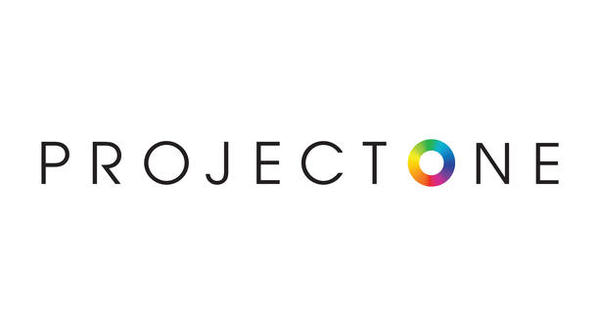
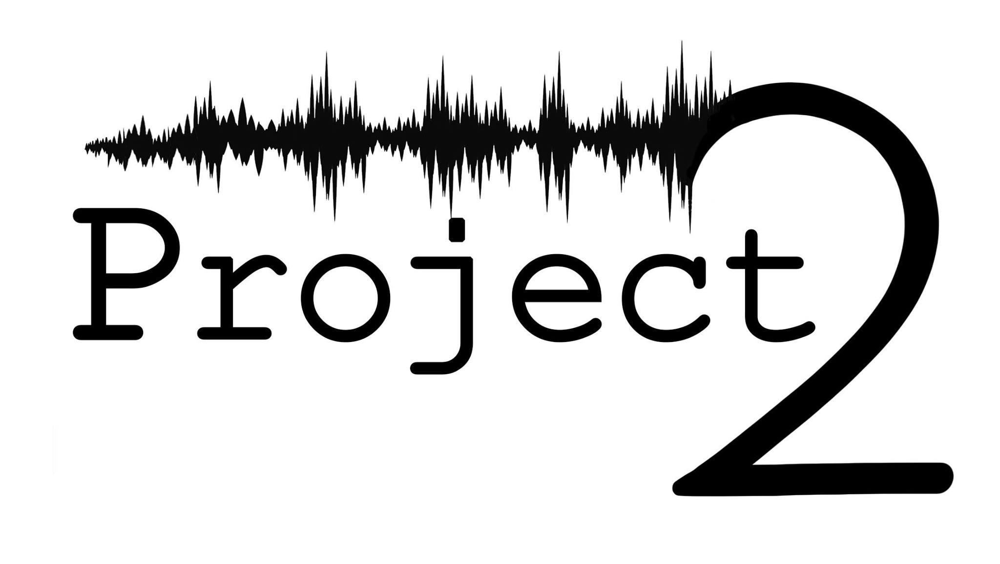

For "Project 1", our team embarked on a mission to create an intuitive task management application tailored for remote teams. Harnessing the power of cloud-based technologies, the software seamlessly integrates real-time collaboration tools with intelligent task prioritization algorithms. Its standout feature, the "Dynamic Scheduler", adapts to shifting team availabilities, ensuring optimal task distribution. Within the first month post-launch, "Project 1" garnered significant attention, with over 5,000 downloads and numerous accolades for its innovative approach to remote team coordination.
Project 1
Project 2
During "Project 2", we set out to revolutionize the e-commerce experience for niche hobbyists. Leveraging AI, the platform offers personalized product recommendations based on user behavior, past purchases, and trending items within their interest categories. A unique feature, named "HobbyHub", connects users with similar interests, fostering community interactions and product discussions. Shortly after its debut, "Project 2" received rave reviews, amassing over 10,000 sign-ups and being lauded for its blend of commerce and community engagement.